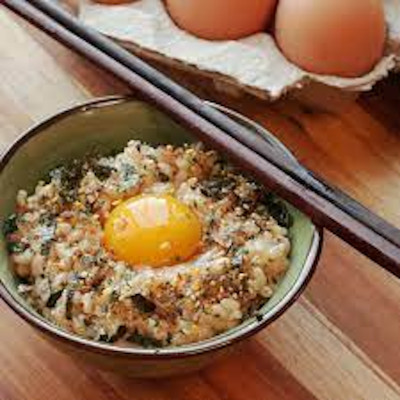

Tamago Kake Gohan

Tamago Kake Gohan is a classic Japanese breakfast dish. It is simple yet delicious, although the concept of eating semi-raw egg can be off-putting to Westerners. It has the consistency of risotto and with the addition of toppings the flavor is limitless!
Ingredients
- 1 Egg, raw
- 1 Tbsp soy sauce
- 1/4 Cup short-grain white rice, uncooked
- Optional: sesame seeds
Steps
- Cook the rice using a rice cooker using 1/2 cup of water.
- When the rice is done cooking, place it into a bowl and crack the egg into the rice.
- Pour the soy sauce into the bowl, and wisk the bowl with a chopstick.
- Optional: Sprinkle a pinch of sesame seeds, or the topping of your choice on top.
- Enjoy!